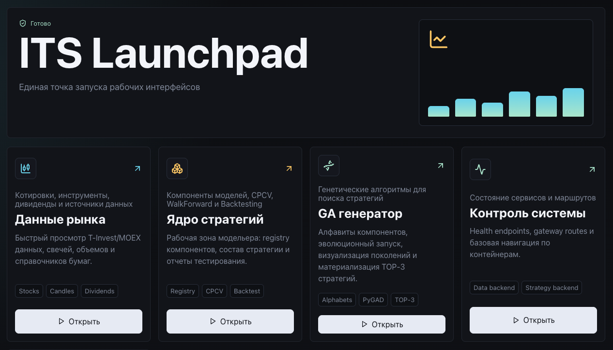
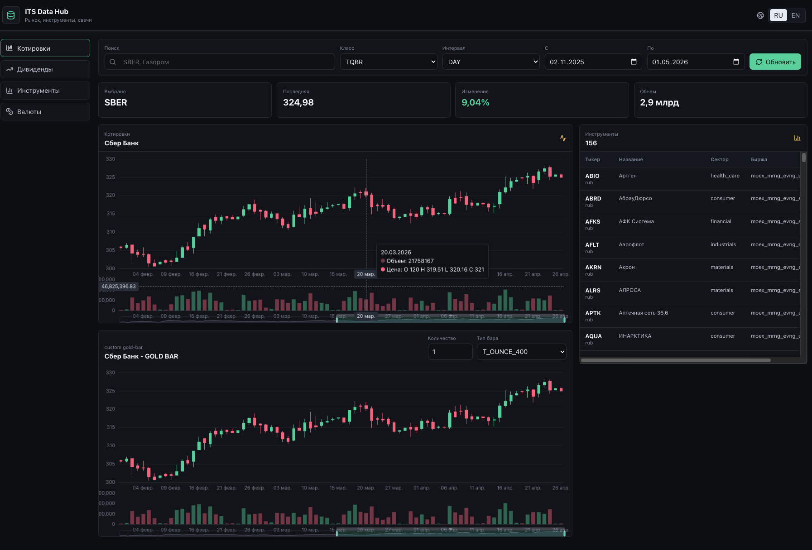
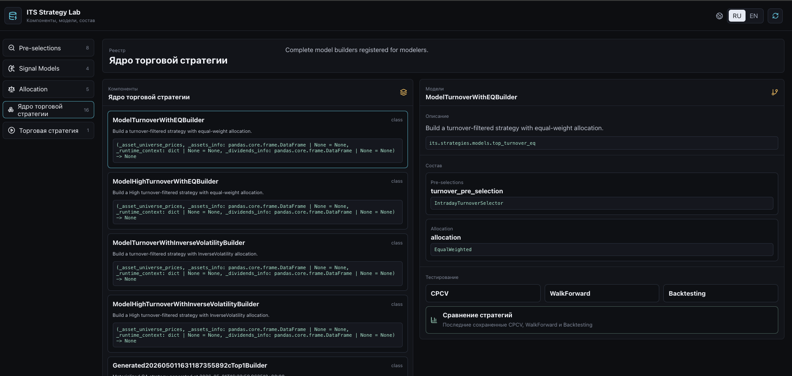
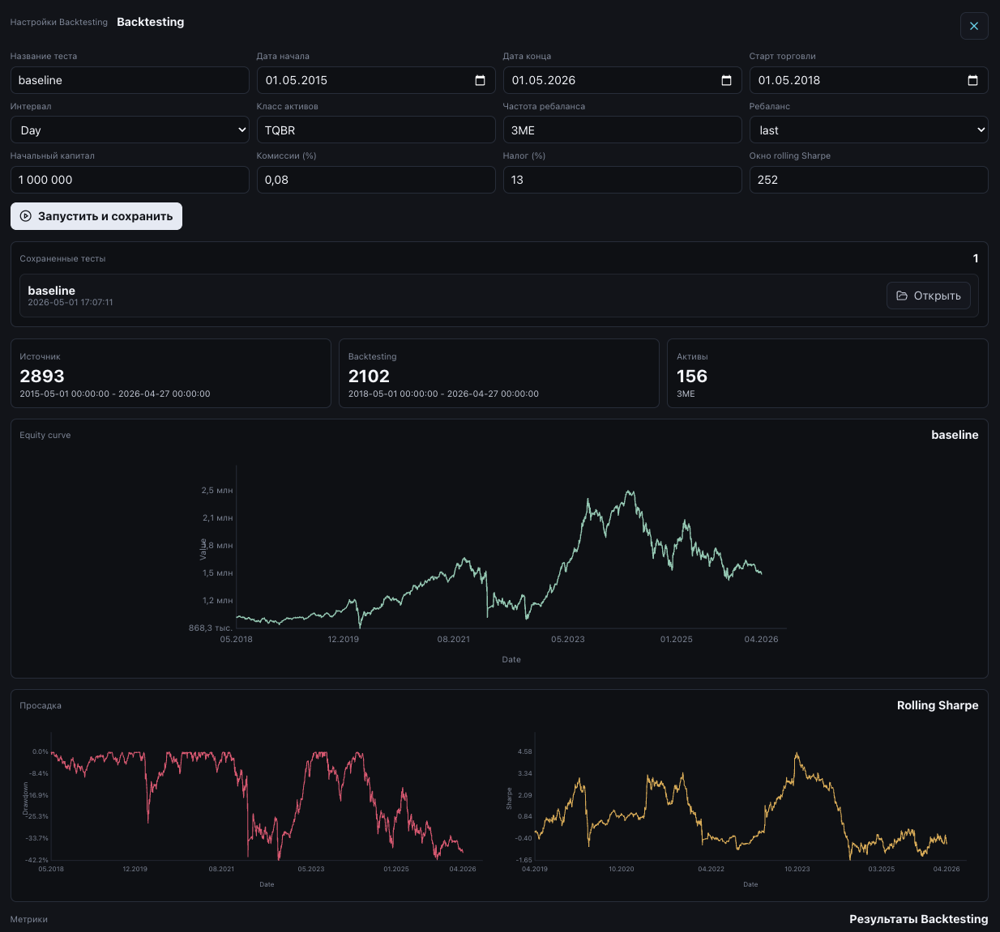
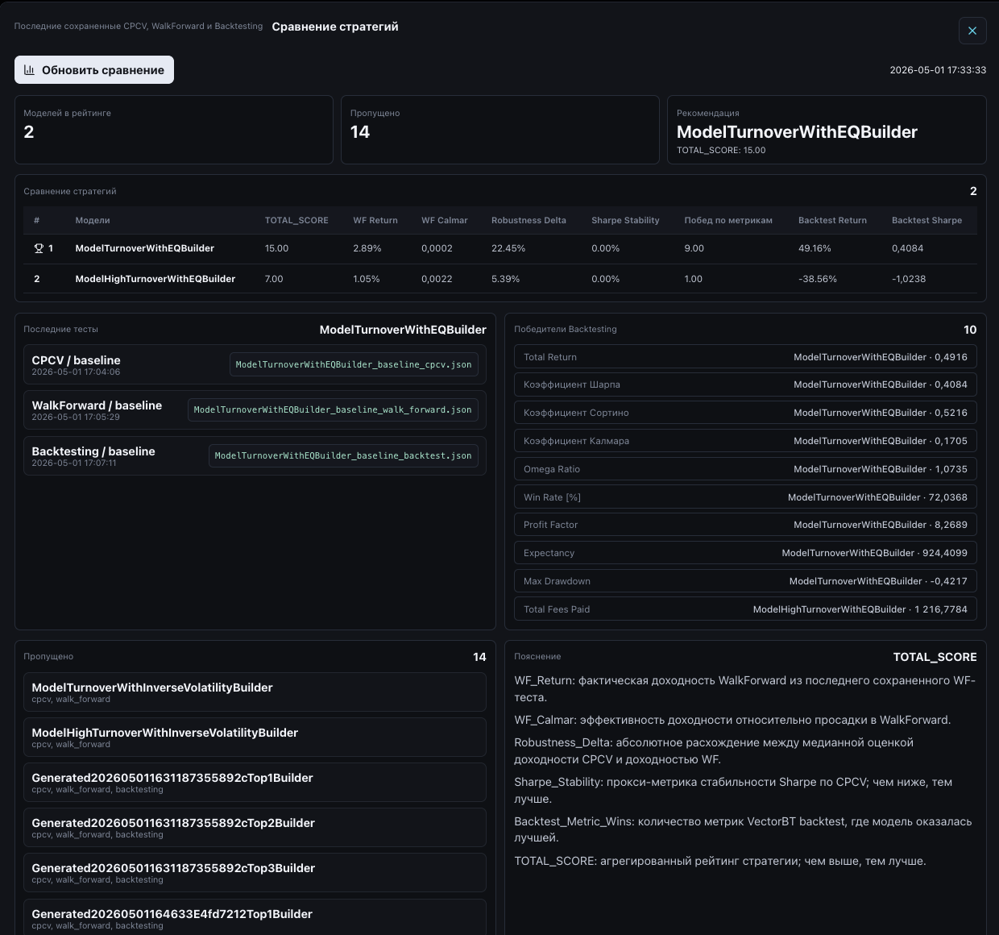
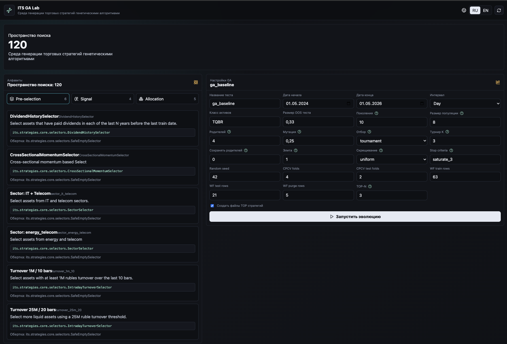

Данные живут отдельно
Источники, справочники, свечи и дивиденды приходится каждый раз сводить заново.
Product presentation
платформа для формирования, проверки и эволюционной генерации торговых стратегий
Смысл продукта
ITS собирает в одном контуре данные, компоненты стратегий, тестирование, сравнение и автоматический поиск новых комбинаций. Не как брокерский терминал, а как рабочая исследовательская среда для аналитика и квант-модельера.
Источники, справочники, свечи и дивиденды приходится каждый раз сводить заново.
У каждой стратегии свой код, свои параметры и свой формат результата.
Красивый backtest может быть следствием удачного периода, а не устойчивой логики.
Селектор, сигнал или аллокатор редко становятся частью системного поиска.
Главная идея не в том, что стратегия делится на известные этапы. Ценность в том, что каждый компонент создается по единому контракту: его можно написать вручную, сгенерировать с помощью ИИ, заменить в модели и включить в эволюционный поиск.

Data Hub
Data Hub не ограничен текущим набором данных. Это единая точка подключения источников: адаптер приводит ответы к общей схеме, после чего данные сразу становятся доступными Strategy Lab, GA Lab и backend-сервисам через один API.

В базовой версии доступны инструменты, OHLCV-свечи, дивиденды, валюты и custom gold bars. Этого достаточно, чтобы показать полный исследовательский цикл.
Новый поставщик данных добавляется через адаптер. После этого источник не нужно отдельно встраивать в каждую модель или тест.
Strategy Lab и GA Lab работают через Data API. Как только данные появились в Data Hub, исследователь может использовать их в компонентах и проверках.

Здесь видны зарегистрированные компоненты, готовые модели, состав стратегии, тесты и сохраненные результаты. Это не витрина: это рабочий стол исследования.
Для pre-selection, signal и allocation заданы классы, протоколы, входы, выходы и правила регистрации. Компонент не живет отдельным скриптом.
Узкий интерфейс помогает эксперту быстро реализовать идею, а LLM — сгенерировать новый селектор, сигнал или аллокатор без переписывания всей системы.
Когда компонент реализует общий контракт, его можно заменить в ручной модели или превратить в ген, к которому применяются отбор, скрещивание и мутация.
Связка pre-selection -> signal -> allocation сама по себе не уникальна. В ITS важен программный стандарт: он делает компоненты взаимозаменяемыми и пригодными для генерации новых алгоритмов через GA.
Аналитик сам выбирает компоненты, задает параметры и собирает стратегию под конкретную экономическую гипотезу. Такой путь удобен, когда есть сильная предметная идея и нужно быстро довести ее до тестов.
Компоненты становятся генами, а стратегия — комбинацией генов. Генетический алгоритм применяет отбор, скрещивание, мутацию и элитизм, чтобы найти новые сочетания, которые человек мог бы не перебрать вручную.
Оба пути сходятся в одном месте: стратегия попадает в общий контур проверки, сравнения и последующей доработки.



CPCV
Combinatorial Purged Cross-Validation помогает увидеть устойчивость результатов и риск переобучения. Пользователь задает период, интервал, класс активов и параметры фолдов, а система сохраняет отчет.
WalkForward
WalkForward обучает модель на одном окне и проверяет на следующем. Для финансовой стратегии это важнее, чем одна усредненная оценка: рынок меняется, и модель должна показывать поведение во времени.
Backtesting
Backtesting в ITS учитывает стартовый капитал, ребалансировки, комиссии, проскальзывание, налоговую ставку и rolling Sharpe. Для полных trading strategies дополнительно видны stop-loss и take-profit события.

Портфель
Важно видеть не только итоговую кривую, но и то, из чего она получилась: какие бумаги вошли в портфель на ребалансировках, как распределены веса и какая секторная экспозиция возникла.

В сравнение попадают модели, у которых есть CPCV, WalkForward и Backtesting. Итоговый рейтинг не сводится к одной доходности: учитываются устойчивость, просадка и качество OOS.
Показывает, что модель заработала вне обучающего участка.
Помогает не путать агрессивную модель с качественной.
Чем меньше расхождение, тем спокойнее интерпретация результата.
Фиксирует, насколько результат зависит от конкретного пути.
GA Lab
В GA Lab попадают компоненты, которые реализуют стандартные протоколы. Кандидат декодируется в рабочую стратегию, проходит оценку и может быть сохранен как обычный Python-класс в реестре моделей.

В алфавит попадает компонент, который реализует общий протокол и имеет понятные параметры.
К стратегиям применяются отбор, скрещивание, мутация, турнир и элитизм.
Fitness использует WF_Return, WF_Calmar, Robustness_Delta и Sharpe_Stability.
Лучшие стратегии появляются в реестре моделей и дальше тестируются как обычные.
Система запускается локально или во внутренней среде. Секреты и источники данных остаются под контролем.
Можно добавлять источники, селекторы, сигналы, аллокаторы, торговые политики и т.д.
Результаты тестов, GA-запуски и материализованные стратегии сохраняются, поэтому исследование можно восстановить и обсудить.
Одна команда поднимает gateway, UI, API и Python-сервисы.
В комплекте есть редактируемые docs и собранные PDF-версии.
Кэши данных, тестов и GA-запусков сохраняются между сессиями.
Data, Strategy и GA backend доступны для интеграций.
Итог
Система не продает обещание доходности. Она дает инфраструктуру, где гипотезы можно формулировать, проверять, сравнивать и развивать без постоянного возвращения к ручной подготовке данных и разрозненному коду.